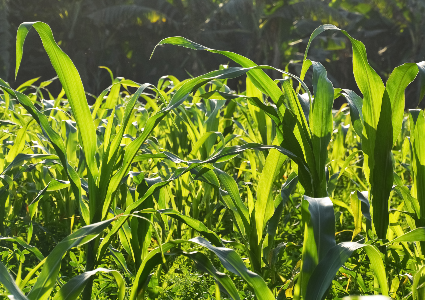
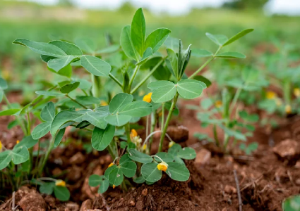
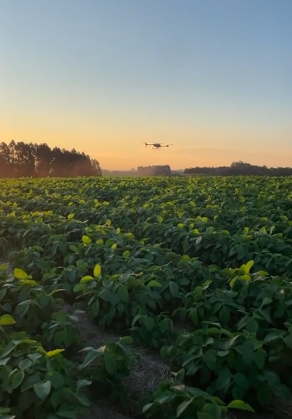
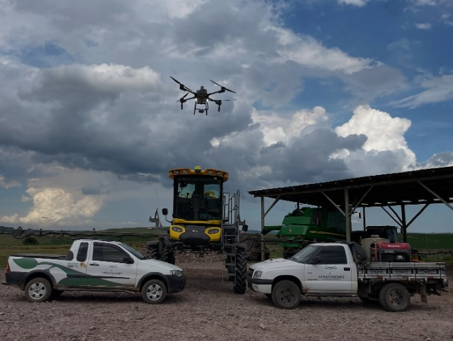
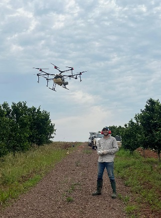
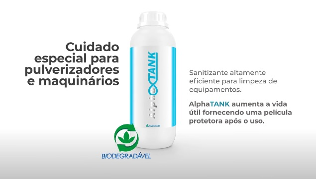

Ideal para terrenos com declives acentuados onde máquinas terrestres não operam. Garante cobertura total em pomares densos.
Soja
Elimina o amassamento, preservando a população de plantas e aumentando a produtividade por hectare.

Milho
Aplica reforço nutricional mesmo em estágios avançados, sem danos mecânicos ao porte alto da planta.

Amendoim
Controle fitossanitário ágil em solos úmidos pós-chuva, garantindo a saúde do ciclo sem compactação.
Nossas Soluções Operacionais
A tecnologia SprayDrones vai além da aplicação. Oferecemos um ecossistema completo de gestão aérea para garantir que cada gota e cada semente alcance o máximo potencial produtivo.

Pulverização de Defensivos e Nutrição
Aplicação de alta tecnologia de herbicidas, inseticidas, fungicidas e defensivos biológicos.
• Aplicação Localizada: Foco direto no alvo, garantindo uma aplicação uniforme em toda a área.
• Adubação Líquida e Foliar: Aplicação de fertilizantes diretamente na folhagem, otimizando a absorção imediata de nutrientes pela planta.
• Bicos Centrífugos: Controle preciso do tamanho da gota para evitar deriva e maximizar a deposição foliar.
• Vazão Variável: Ajuste automático conforme a velocidade do voo, mantendo a dose exata por metro quadrado.

Dispersão de Sólidos (Semeadura e Adubação)
Uso de dispersores centrífugos de alta capacidade para lançar sementes e insumos granulados.
• Semeadura Aérea: Rapidez no plantio de culturas de cobertura e pastagens, mesmo em solo úmido.
• Adubação Granulada: Distribuição uniforme de fertilizantes sólidos (N-P-K) com largura de faixa controlada.
• Rendimento Operacional: Capacidade de cobrir grandes áreas em frações de tempo comparado a métodos manuais.
• Acesso Total: Ideal para áreas alagadas ou declives onde o trator não consegue tracionar.

Mapeamento e Monitoramento da Lavoura
Uso de câmeras e sensores avançados para gerar diagnósticos precisos sobre a saúde do plantio.
• Imagens Multiespectrais (NDVI): Identificação de stress hídrico, pragas e doenças antes de serem visíveis ao olho humano.
• Controle de Falhas: Localização exata de falhas de plantio ou deficiências nutricionais pontuais.
• Mapas de Prescrição: Geração de arquivos para aplicação em taxa variável (trate apenas onde é necessário).
• Planejamento de Rota: Mapeamento de obstáculos e altimetria para garantir voos de pulverização seguros e precisos.
Benefícios dos Serviços com Drones
Zero Amassamento
Diferente de tratores, o drone não danifica a plantação, aumentando a produtividade final em até 5%.
Economia de Insumos
Tecnologia de aplicação localizada que reduz o uso excessivo de água e otimiza o uso de produtos químicos.
Alta Agilidade
Modelos DJI Agras de última geração operando com capacidade superior a 20 hectares por hora.
Segurança do Operador
Reduz drasticamente a exposição direta dos trabalhadores aos defensivos agrícolas.
Insumos Tecnológicos (DAT)
ADJUVANTES PREMIUM
GRAP TECH & SWIFT 🛰️
Tecnologia desenvolvida especificamente para volumes ultra-baixos, garantindo antideriva e penetração total.

MANUTENÇÃO
ALPHA OCTANK 🛡️
Sanitizante biodegradável para limpeza e proteção anticorrosiva de todo o sistema do drone.
Pronto para transformar sua produtividade?
Atendemos rigorosamente as normas da ANAC e Ministério da Agricultura.